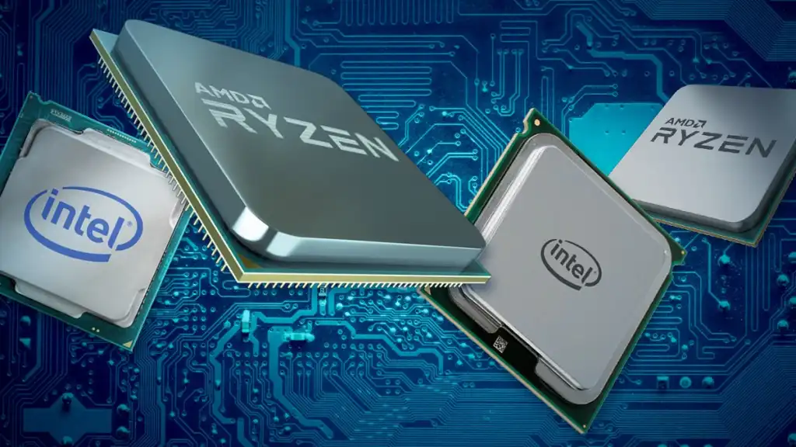

A CPU, or Central Processing Unit, is the primary component of a computer system responsible for executing instructions and controlling the operation of other hardware devices. It is often referred to as the "brain" of a computer. The history of CPUs spans several decades and involves many significant developments that have shaped the way we use computers today.
The earliest computers were large and expensive machines that were used primarily for scientific and military purposes. They relied on vacuum tubes, which were bulky and unreliable, to perform computations. In the late 1940s, the first transistor was invented, and this led to the development of the first solid-state computer, the IBM 7090. This machine was much smaller and more reliable than its predecessors, and it marked the beginning of the modern era of computing.
What's a CPU?
